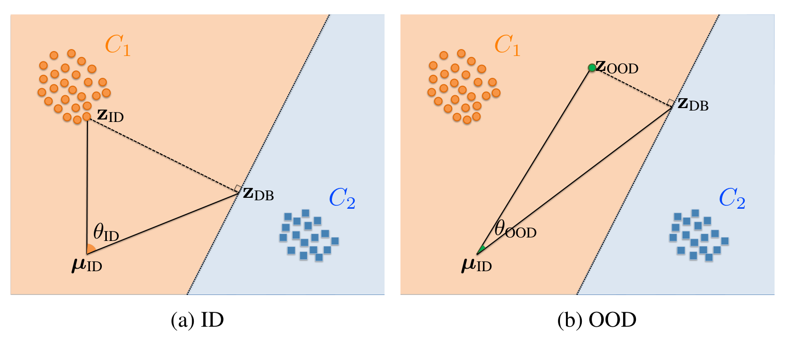
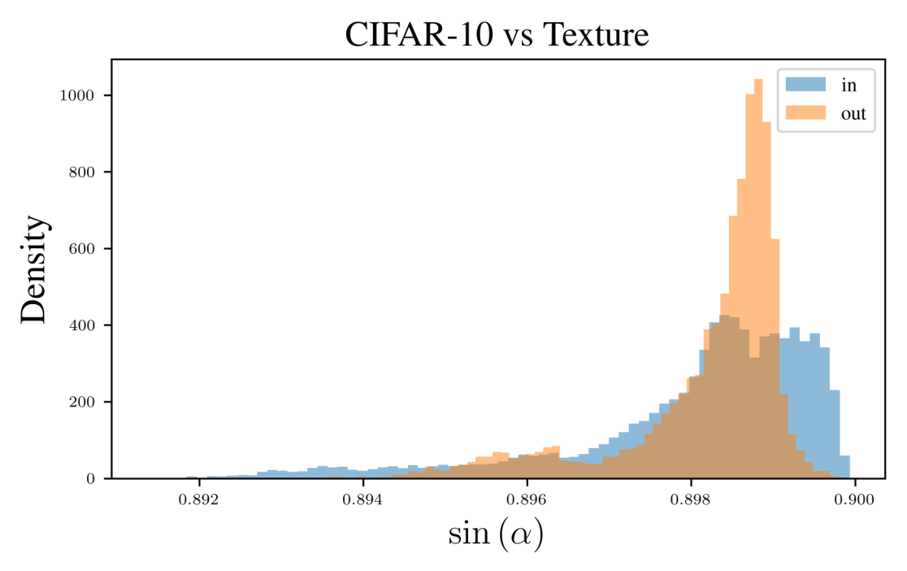

ORA is a post-hoc out-of-distribution score for any pretrained classifier. It projects a feature onto the decision boundaries, moves the origin to the mean of the in-distribution features, and reads off the angle between the feature and its projection: large for in-distribution inputs, small for out-of-distribution ones. The score has no hyperparameters and does not change when the feature space is rescaled, so scores from different models can simply be added. Across nine ImageNet backbones it has the lowest average FPR95 of the thirteen methods we compare.
Knowing what the model does not know
A classifier trained on a fixed set of labels will still produce a label for an image from a class it has never seen. A reliable system should notice this and abstain, which matters most in settings like medical diagnosis or driving. Out-of-distribution (OOD) detection asks exactly this: does an input come from the in-distribution \(P_{ID}\) the model was trained on, or from a distribution whose labels lie outside the training label set?
We focus on post-hoc detectors: score functions \(s(x; f)\) computed from an already trained model \(f\), without retraining. An input is accepted as in-distribution when its score clears a threshold \(\lambda\), and in the standard FPR95 metric \(\lambda\) is set so that 95% of held-out ID data is accepted; FPR95 is then the fraction of OOD inputs that slip through.
Post-hoc scores roughly come in two families. Logit-based scores such as maximum softmax probability or the energy score read the model's confidence off its outputs, and inherit the overconfidence of neural networks. Feature-based scores work in the penultimate feature space, for example through nearest-neighbour distances or through the distance of a feature to the decision boundaries. The boundary view is appealing: OOD inputs do not carry strong evidence for any class, so they should sit closer to the boundaries than ID inputs. The fDBD score of Liu and Qin builds on this idea and normalizes the boundary distance by the distance to the ID mean. Our derivation below shows that this normalization introduces a factor that does not help separate ID from OOD, and that removing it leaves a clean geometric quantity: an angle.
A triangle in feature space
Write the network as a feature extractor followed by a linear head, \(g(z) = Wz + b\), where \(z \in \mathbb{R}^D\) is the penultimate feature. The decision boundary between two classes \(y_1\) and \(y_2\) is the hyperplane where their logits tie, \((w_{y_1}-w_{y_2})^\top z + b_{y_1}-b_{y_2} = 0\), and projecting a feature onto it has a closed form:
The angle between \(z\) and \(z_{db}\) is a natural measure of how far a feature is from changing its label, but measured from the origin it depends on an arbitrary choice of reference point. We remove that ambiguity by moving the origin to the mean of the in-distribution features, \(\mu_{ID}\). The centered feature \(z-\mu_{ID}\), its centered projection \(z_{db}-\mu_{ID}\), and the new origin form a triangle, and we use the angle at the origin, the relative angle:
With many classes, a feature has one boundary per competitor of its predicted class \(\hat y = \arg\max_y g(z)\). ORA takes the largest relative angle among them, the boundary that is furthest away as seen from the ID mean:

Four properties make this a useful score. The angle grows with the distance between the feature and the boundary, so it acts as a proxy for confidence: changing an ID feature's label is costly. Centering on \(\mu_{ID}\) builds the statistics of the training data into the score. Taking the maximum over boundaries looks at the class the feature is furthest from. And because it is an angle, the score does not change when the feature space is scaled, which we come back to below. ORA has no hyperparameters, so given a pretrained model it is fully deterministic.
The sketch below is a two-class version of Figure 1. Drag the feature around: deep inside a class the angle is wide, and it collapses as the feature drifts toward the boundary. The scale slider shows the invariance directly.
Penultimate feature space
- class C1
- class C2
- decision boundary
- test feature z
Relative angle
Scale the feature space: the distance to the boundary grows and shrinks with it, the angle does not. That invariance is what lets ORA sum scores across models.
Why angles, and why the ID mean
The relative angle also explains fDBD. fDBD divides the distance to the boundary by the distance to the ID mean, \(d(z, z_{db}) / \lVert z-\mu_{ID}\rVert\). Both lengths are sides of our triangle, so by the law of sines
where \(\theta\) is our relative angle and \(\alpha\) is the angle opposite the side \(z-\mu_{ID}\). The extra factor \(\sin\alpha\) is tied to the magnitude of the feature relative to \(\mu_{ID}\), which need not say anything about whether an input is OOD. Figure 2 shows that its distributions for CIFAR-10 and an OOD dataset (Texture) overlap heavily, so dropping it and keeping \(\theta\) alone removes noise from the score.

Scale invariance has a precise form. If one encoder's features are a scaled copy of another's, \(z_{M_2} = k\, z_{M_1}\) for some \(k > 0\), and both share the same linear head without bias, the two models make the same decisions, their relative angles are identical, and their distances to the boundary differ by the factor \(k\) (Appendix C of the paper). Distance-based scores from different networks therefore live on different scales, while ORA scores are directly comparable. This is what makes ensembling as simple as summing scores.
The two design choices also hold up in ablations. Centering on the global ID mean beats centering on the predicted-class mean, the true-class mean, or the maximum of the ID features, and taking the maximum angle over boundaries beats taking the mean or the minimum.
| CIFAR-10 | ImageNet | |||
|---|---|---|---|---|
| Variant | FPR95 ↓ | AUROC ↑ | FPR95 ↓ | AUROC ↑ |
| Centering point | ||||
| Predicted-class mean \(\mu_{y_{pred}}\) | 12.42 | 97.59 | 43.02 | 89.86 |
| True-class mean \(\mu_{y_{target}}\) | 13.26 | 97.48 | 28.29 | 93.46 |
| Maximum of ID features | 13.39 | 97.42 | 32.44 | 92.01 |
| ID mean \(\mu_{ID}\) (ORA) | 10.97 | 97.67 | 25.04 | 94.26 |
| Aggregation over boundaries | ||||
| Minimum | 32.02 | 95.23 | 79.15 | 81.38 |
| Mean | 11.84 | 97.59 | 32.76 | 92.87 |
| Maximum (ORA) | 10.97 | 97.67 | 25.04 | 94.26 |
What we found
Most OOD benchmarks on ImageNet are reported for a ResNet-50 alone. We evaluated nine backbones instead: ConvNeXt, Swin, DeiT and EVA, the ImageNet-21k pretrained variants of the first three where available, a ResNet-50, and a ResNet-50 trained with supervised contrastive learning (SCL). We compare ORA against twelve post-hoc scores. The threshold is set on 50,000 ImageNet validation images, and iNaturalist, SUN, Places365 and Texture serve as OOD data.
| Model | MSP | MaxL | Energy | R-Mah | R-Cos | P-Cos | NNG | KNN+ | fDBD | NCI | Maha+ | NECO | ORA |
|---|---|---|---|---|---|---|---|---|---|---|---|---|---|
| ConvNeXt | 63.54 | 60.69 | 78.70 | 45.79 | 46.99 | 49.37 | 39.54 | 47.40 | 39.03 | 36.44 | 36.68 | 34.52 | 34.92 |
| ConvNeXt-pre | 45.57 | 42.39 | 46.95 | 34.91 | 36.16 | 35.47 | 76.91 | 77.23 | 42.13 | 50.48 | 37.50 | 34.40 | 29.53 |
| Swin | 61.99 | 59.21 | 65.78 | 45.25 | 46.26 | 49.37 | 57.34 | 53.79 | 52.34 | 57.25 | 48.21 | 58.24 | 51.56 |
| Swin-pre | 46.20 | 40.86 | 42.33 | 39.40 | 35.66 | 33.94 | 44.06 | 51.34 | 38.92 | 39.63 | 42.67 | 36.49 | 35.13 |
| DeiT | 57.48 | 57.52 | 70.05 | 52.51 | 47.63 | 61.62 | 58.02 | 71.34 | 55.98 | 58.11 | 54.18 | 58.49 | 54.16 |
| DeiT-pre | 57.45 | 54.72 | 55.56 | 39.37 | 38.49 | 39.11 | 43.56 | 44.18 | 46.69 | 57.76 | 38.68 | 52.61 | 37.76 |
| EVA | 43.75 | 40.37 | 43.40 | 27.45 | 27.94 | 27.68 | 37.33 | 34.19 | 36.10 | 39.34 | 31.11 | 36.05 | 33.37 |
| ResNet-50 | 66.95 | 64.29 | 58.41 | 83.29 | 59.51 | 45.53 | 55.22 | 53.97 | 51.19 | 63.03 | 49.67 | 56.62 | 43.63 |
| ResNet-50 (SCL) | 50.06 | 97.59 | 98.46 | 77.52 | 48.18 | 31.57 | 98.80 | 38.47 | 32.78 | 96.02 | 45.06 | 97.58 | 25.04 |
| Average | 54.78 | 57.52 | 62.18 | 49.50 | 42.98 | 41.52 | 56.75 | 52.43 | 43.90 | 55.34 | 42.64 | 51.67 | 38.34 |
ORA has the lowest average FPR95, 38.34%, which is 3.18 points below the runner-up, P-Cos at 41.52%. It also gives the single lowest number in the table, 25.04% on the SCL ResNet-50, against 27.45% for the best competitor anywhere (R-Mah on EVA). Per backbone, the picture is more varied: ORA is lowest on four of the nine models and second on two more, while R-Mah, R-Cos, P-Cos and NECO each win elsewhere. No competitor is consistently strong, though, and several that win on one backbone fail badly on another; the SCL ResNet-50 row is the clearest example.
Contrastive features help
The SCL row hints at a pattern. Contrastive objectives arrange the feature space so that semantic concepts are well separated, and ORA benefits from that structure. With SCL-trained backbones, ORA has the lowest FPR95 on both CIFAR-10 (ResNet-18) and ImageNet (ResNet-50), going from 11.85% to 10.97% and from 32.78% to 25.04% relative to the best competitor, fDBD (Table 3 of the paper).
CLIP is contrastive across modalities. With a linear probe on CLIP ViT-H/14 features, ORA reaches 23.94% average FPR95 and the highest average AUROC of the methods we ran, 95.03%. CLIP also lets us drop the trained head entirely: the boundary between two classes can be defined by the text embeddings \(z_{c_1}, z_{c_2}\), as the set of normalized features equally similar to both. With \(u = (z_{c_1}-z_{c_2})/\lVert z_{c_1}-z_{c_2}\rVert\), the projection is simply \(z_{db} = z - \langle z, u\rangle u\). This zero-shot ORA reaches 25.85% FPR95; the lowest average FPR95 in that comparison belongs to zero-shot R-Mah, at 22.57% (Table 2 of the paper).
Ensembles by addition
Because ORA scores are comparable across models, an ensemble is just the sum of the scores of its members. Summing ORA over a ResNet-50, an SCL ResNet-50 and a ViT-B/16 lowers FPR95 by 2.51 points and raises AUROC by 2.15 points compared to the best member on its own.
| Score and model | FPR95 ↓ | AUROC ↑ |
|---|---|---|
| fDBD, ResNet-50 | 51.35 | 89.20 |
| fDBD, ResNet-50 (SCL) | 32.78 | 92.86 |
| fDBD, ViT-B/16 | 41.55 | 91.05 |
| fDBD ensemble | 31.05 | 95.29 |
| ORA, ResNet-50 | 44.58 | 90.68 |
| ORA, ResNet-50 (SCL) | 25.04 | 94.26 |
| ORA, ViT-B/16 | 39.92 | 91.38 |
| ORA ensemble | 22.53 | 96.41 |
ORA also composes with activation-shaping methods, which truncate or rescale features before scoring. Applying ORA after ReAct reduces FPR95 from 25.04% to 20.36%, and ASH and Scale bring it to 23.47% and 23.34% (Table 5 of the paper).
Limitations
- ORA needs decision boundaries. It is defined for models with a linear classification head. For vision-language models the zero-shot construction above replaces the head with text embeddings, but a plain feature extractor without either has no boundaries to project onto.
- Near-OOD is harder for everyone. On NINCO and SSB-Hard, where OOD images are visually close to ID classes, all methods lose separability and no single one is clearly best. Methods built on class centroids tend to do better there, at the cost of storing per-class statistics; ORA, which uses only the global ID mean, is competitive with them (Appendix I of the paper).
- One reference point. We tested centering on per-class means and on the predicted-class mean and found no consistent gains. A data-driven weighting of per-class angles, for example by class-wise feature variance or accuracy, is a natural next step that would keep the score hyperparameter-free.
Citation
@inproceedings{
demirel2025ood,
title={{OOD} Detection with Relative Angles},
author={Berker Demirel and Marco Fumero and Francesco Locatello},
booktitle={The Thirty-ninth Annual Conference on Neural Information Processing Systems},
year={2025},
url={https://openreview.net/forum?id=ul5mlXrLZb}
}